GEMS Proprietary Class: A
Direction 5117807-800, Rev# A
GEMS Proprietary Class: A |
This module contains the following sections:
Section 1 - Data Acquisition / Recon Control (DARC)
Section 2 - Image Generation (IG) Computer
Section 3 - Scan Data Disk Array (SDDA)
Section 4 - SCSI Tower
Section 5 - Global Recon Engine Overview
Section 6 - Module Interconnections
The DARC motherboard shall be an Intel ® Westville TM, or equivalent, and shall meet the following requirements:
Support Dual Intel ® Xeon™ Socket604 processors (2.8GHz minimum)
On-board regulation of processor voltages
Intel ® E750x chipset
533Mhz Front Side Bus (FSB)
Minimum of two (2) 10/100/1000 Mb on-board ethernet ports
2.0GB DDR-266 SDRAM ® memory using minimum two (2) 184-pin DIMM sockets
Support Serial Over LAN (SOLAN)
One (1) ATA100 interface
One (1) UART, DB9 interface
One (1) Ultra320 SCSI controller capable of supporting externally connected peripherals
Minimum of four (4) PCI-X expansion slots (100Mhz min.) each able to accommodate a riser card
BIOS configuration shall be agreed upon between GEMS and vendor
The DARC shall include at least four (4) PCI-X expansion slots:
A minimum of two (2) slots shall be able to accommodate full-height “short” cards
One slot shall accommodate a DAS Interface Processor (GEMS part no. 2363229)
Any remaining slots shall be able to accommodate low-profile or “half height” cards
The DARC shall contain one (1) internal 3.5", half-height, 1.44MB floppy diskette drive.
The DARC shall include one (1) internal hard disk drive as follows:
3.5" half height form factor
IDE ATA-100 interface
Minimum unformatted capacity of 40GB
Minimum rotational rate of 7,200 RPM
The DARC shall include one (1) internal CD-ROM drive as follows:
5.25" “slim” form factor
IDE (ATAPI) interface
Minimum Rotational speed: 40X
Minimum of 512K internal data buffer
Read compatible with CD-R, CD-ROM, CM-ROM-XA, CD-I, CD Audio (CD-DA), PhotoCD Multi-session, CD-Extra, and CD-Text
The DARC shall have four (4) external Ethernet port connections as follows:
| NOTE: | Low profile PCI-X expansion cards may be used to achieve the four (4) port requirement. |
IEEE 802.3 compatible 10/100/1000 MB/sec auto-sensing Ethernet
Standard 8-pin RJ45 locking female connector mounted at rear of the chassis
The Ethernet connector shall have the following pin assignments:
Pin 1: TX + Pin 5: DC -
Pin 2: TX - Pin 6: RX -
Pin 3: RX + Pin 7: DD +
Pin 4: DC+ Pin 8: DD -
The DARC shall have one (1) external Ultra320 SCSI port consisting of a VHDCI68 female connector with captive #2-56 female screw jacks for cable attachment. This port shall reside on the motherboard, protruding through the rear of the chassis.
The DARC shall include external switches and indicators on the chassis as follows:
A pushbutton system POWER ON/OFF switch, which toggles system power ON or OFF when pressed or held.
A pushbutton system RESET switch, accessible on the front of the chassis, that re-initializes all internal hardware without cycling power to the DARC (hard reset/soft boot).
LED indicators shall be accessible and visible on the front of the chassis as follows:
System power is ON - steady GREEN - labeled “I/O”
System error - flashing or steady RED - labeled “FLT”
LAN Activity - flashing YELLOW - labeled “LAN”
Hard Disk Activity - flashing GREEN - labeled
Non-Operating Environment:
Temperature 0° - 35° C (32° - 95° F)
Temperature Change 3° C per Hour (37.5° F per Hour)
Relative Humidity 20% - 80% (non-condensing)
Relative Humidity Change 5% RH per hour
Noise Less than 45 dB
Altitude 10,000 feet above sea level
Shock Max 20G @ less than 3ms (1/2 sine)
Vibration Max random 0.21G RMS
2362870 DARC as defined herein including:
Dual Intel® Xeon TM 2.8Ghz processors, 512KB L2 Cache, 2.0Gb DDR200 SDRAM memory, etc.
The IG motherboard shall be an Intel ® Westville™, or equivalent, and shall meet the following requirements:
Support Dual Intel ® Xeon™ Socket 604 processors (2.8GHz minimum)
Onboard regulation of processor voltages
Intel ® E750x chipset
533Mhz Front Side Bus (FSB)
Minimum of one (1) 10/100/1000 Mb onboard ethernet port
2.0GB DDR-266 SDRAM ® memory using minimum two (2) 184-pin DIMM sockets
Support Serial Over LAN (SOLAN)
One (1) PCI-X expansion slot (100Mhz min.) accommodating a riser card
The IG shall include at least one (1) PCI-X expansion slot capable of accommodating a full-height “short” card.
This expansion slot shall contain a Recon Accelerator Card (GEMS part no. 2316826)
The IG shall contain one (1) internal 3.5", half-height, 1.44MB floppy diskette drive.
The IG does not require Ethernet ports in addition to the board-resident port.
Chassis type: Rack-mountable
Mounting orientation: Horizontal
Maximum chassis height: 1U (44.5mm/1.75”)
Maximum chassis width: 19" Rack standard
Maximum chassis depth: 508mm (20")
Maximum weight: 10 Kg (22 lbs)
Handles shall be mounted at each side of the front of the chassis for ease of removal from a rack.
The IG shall include external switches and indicators on the chassis as follows:
A system pushbutton POWER ON/OFF switch which toggles system power ON or OFF when pressed or held.
A pushbutton system RESET switch accessible on the front of the chassis that re-initializes all internal hardware without cycling power to the IG (hard reset/soft boot).
LED indicators shall be accessible and visible on the front of the chassis as follows:
System power is ON - steady GREEN - labeled “I/O”
System error - flashing or steady RED - labeled “FLT”
LAN Activity - flashing YELLOW - labeled “LAN”
Temperature Change 3°C per Hour (37.5°F per Hour)
Relative Humidity 20% - 80% (non-condensing)
Relative Humidity Change 5% RH per hour
Noise Less than 45 dB
Altitude 10,000 feet above sea level
Shock Max 20G @ less than 3ms (1/2 sine)
Vibration Max random 0.21G RMS
Temperature 0° - 35°C (32° - 95°F)
2362872 IG as defined herein including:
Dual Intel® Xeon™ 2.8Ghz processors, 512KB L2 Cache, 2.0GB DDR200 SDRAM memory, etc.
The SDDA shall include two (2) internal hard disk drives as follows (Seagate ST336753LW or equivalent):
3.5" half height form factor
Ultra320 SCSI LVD interface (320MB/sec burst rate)
Minimum formatted capacity of 36GB
Minimum rotational rate of 15,000 RPM
Minimum head rate of 51 MB/sec
The SDDA shall have one (1) external SCSI port as follows:
Minimum Ultra320 SCSI-3 port (max burst rate of 320MB/sec)
Internal LVD termination
HD68 female connector with captive #2-56 female screw locks for cable attachment
The following outputs will be available at the rear of the chassis.
Connecting J54 to a USB-B Female connector at the chassis rear panel.
Connecting J53 to a DB9 Male connector at the chassis rear panel.
Connecting J4 to a pair of 3.5mm female audio jacks at the chassis rear panel.
The SDDA shall accommodate an Intercom/Prescribed Tilt board (2364405) Board Connectors: one (1) HD50 female (J19), one (1) DB25 female (J20), and power at one (1) 6-pin Mate-N-Lok connector (J1) per the following:
Illustration 1: Intercom/Prescribed Tilt Board
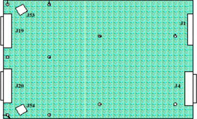
Power to be supplied to the ICPT board via an ATX-style connector per the following:
Table 1: Power to be Supplied to ICPT Board
| Supply Voltage | Supply Currents | |||
| ICPT | Gantry Intercom | SCIM | Total | |
| +5V | 0.5A | - | 1.5A | 2.0A |
| +12V | 1.5A | 0.5A | 0.25A | 2.25A |
| -12V | 1.5A | 0.5A | 0.1A | 2.1A |
Illustration 2: ATX-style Connector
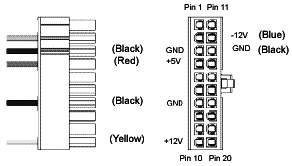
The SDDA shall include external switches and indicators on the chassis as follows:
A system Power ON/OFF switch and LED shall be accessible and visible on the front of the chassis. The Power ON/OFF switch shall toggle system power ON or OFF when pressed or held. The LED may either be integral to the switch, or separate; and shall show a steady GREEN state when system power is ON. The Power ON/OFF switch shall be labeled as such using standard ISO/IEC symbols.
An LED for each Scan Data Disk shall be accessible and visible on the front of the chassis. A steady Green state shall indicate “disk in use”. The LED for each Scan Data Disk shall be labeled accordingly. (i.e. “HD1” for disk 1, “HD2” for disk 2, “HD3” for disk 3, “HD4” for disk 4, etc.)
The ICPT board contains a potentiometer header. It is necessary for the adjustment of these potentiometers to be accessible from the front of the chassis, requiring removal of a protective cover. To accomplish this, the SDDA shall contain a PCB header toward the front of the chassis with a cable running back to the potentiometer header on the ICPT board. Each potentiometer and its corresponding test points are to be labeled on the front of the chassis as follows:
Table 2: SDDA Potentiometer Test Points
| POT | Test Point 1 | Test Point 2 | Setting |
| R3 | TP5 | TP3 | 2.0k ohms ± 10% |
| R5 | TP2 | TP3 | 1.5k ohms ± 10% |
| R10 | TP4 | TP3 | 500 ohms ± 10% |
The SDDA should operate within the following limits of environmental conditions:
Table 3: Operating Environmental Conditions for SDDA
| Temperature | 0° - 35°C (32° - 95°F) |
| Temperature Change | 3°C per Hour (37.4°F per Hour) |
| Relative Humidity | 20% -80% (non-condensing) |
| Relative Humidity Change | 5% RH per hour |
| Noise | Less than 45 dB |
| Altitude | 10,000 feet above sea level |
| Shock | Max 20G @ less than 3ms (1/2 sine) |
| Vibration | Max random 0.21G RMS |
The SDDA shall sustain no permanent damage while in the following non-operating environment
Table 4: Non-operating Environment Conditions for SDDA
| Temperature | -34° to 50°C (-29° to 122°F) |
| Temperature Change | 5°C per Hour (41°F per Hour) |
| Relative Humidity | 10% - 95% (non-condensing) |
| Relative Humidity Change | 5% RH per hour |
| Altitude | 40,000 feet above sea level |
| Shock | 80G @ less than 3ms (1/2 sine) |
| Vibration | 2.09G RMS (random). Max swept sine 0.5G RMS (0-peak) |
2362873 SDDA as defined herein including:
(2) Ultra320 36GB 15KRPM Scan Data Disks, ICPT Board, power supply, and cabling
2362873-2 36GB 15KRPM 3.5" Ultra320 disk drive - Ref. Seagate ST336753LW
2 Bay External SCSI tower that is used on the Global Recon Engine Console. The tower will contain a MOD read/write device and a DVD-RAM drive.
Illustration 3: SCSI Tower (Exploded View)

| NOTE: | Click on the PDF icon below, to view the full version of the illustration. |
Media File 1: SCSI Tower (Exploded View)

The Global Reconstruction Engine (GRE) consists of the following three (3) nodes. Each node will maintain a standard 19" wide rack-mount x 20" deep form factor, and will receive power from a 120Vac power supply internal to the console.
The Data Acquisition and Recon Control (DARC) Node - replaces the RIP board on current Helios 1.3 Scan/Recon units.
The Image Generator (IG) Node - replaces the Pegasus fast Image Generator board in current Scan/Recon units.
Scan Data Disk Array (SDDA) Node - replaces the current configuration of Raw Data Disks, Intercom board, and Prescribed Tilt board.
The DARC node receives raw data from the DAS through an on-board DIP card, and stores that data in the Scan Data Disks located in the SDDA. The raw data is then delivered from the scan data disks in the SDDA to the IG nodes. The IG nodes then create images using on-board processors and RAC cards. The images generated by the IG nodes are sent back to the DARC node, which gathers the images and sends them to the Host Computer.
Though each IG node will have a floppy boot disk, the DARC node should be capable of booting all IG nodes in the GRE via Gigabit Ethernet, using Serial Over LAN (SOLAN) functionality.
The host computer for the GRE console will be an off-the-shelf, Linux-based system, which meets EMC requirements per CISPR 11.
The DARC node provides to the IG nodes not only boot code but all application code and parameters as well.
Key goals of the GRE are:
Scalability - performance and cost are scalable
Flexibility - new functions and features such as cone-beam back projection should be easy to implement
Performance - the high-end configuration should support 12 frames per second 2D back projection
Ability to Upgrade - it should be relatively easy to replace installed-base consoles
Performance - general purpose processors should be used to take advantage of improving processor speeds in the industry
The overall performance scope of the GRE shall be as follows:
Recon times: 4fps - 12fps @ 2D BP
Latency: < 2.0 seconds
Image Matrix: < 512 x 512 pixels
2D BP: hardware and software support
3D BP: not yet supported
The DARC node controls most of the GRE functions and data flow, the exception being actual image generation. This node should receive a reconstruction request from the host computer, recognize the recon mode, timing, parameters, and data, and be able to generate the image set.
The raw data is first restored from the disks. The DARC node then creates an image set and requests image generation from the IG node.
While most of the software components (e.g. Recon_Control, Data_Restore, Image_Buffer, and Data_Acq) reside on this node, the components related to image generation are calculated on the IG nodes. The DARC node may help with some light calculation tasks such as offset vector generation.
Main data flow of the DARC node is described as follows:
Receive raw data from the Gantry
Store the raw data to the scan data disks
Restore the raw data from the scan data disks and transfer to IG nodes over GB Ethernet
Take multi-image streams from the IG nodes and forward them through a single image stream to the host computer
The DARC node is comprised of the following:
DARC computer: a computer node using a high-performance PC server
DARC disk: the OS and Recon Applications software are stored on this disk
DIP card: the DAS Interface Processor card
Gigabit Ethernet (GbE) card: to increase IG nodes additional GbE cards may be installed
CD-ROM drive: will be used for software installation and stand-alone use
Floppy drive: a 3½” floppy drive will be used for BIOS flash, if necessary
The DARC node will take advantage of a standard, off-the-shelf motherboard, using dual microprocessors to increase processing density. The DARC node will use very high performance general-purpose processors, memory, and a server motherboard with GB Ethernet and SCSI port(s), and power supply.
Dual Processors: Intel ® Xeon ™ or successor
Memory: Min. four slots DDR-SDRAM (Min. 2.0 GB)
Form factor: SSI rack-mountable
Onboard graphics chip and PS/2 port(s) are needed to support development and diagnostics
The chassis is a standard EIA 19" x 2U rack-mount with a max. depth of 20". The chassis have a cooling system capable of sufficiently dissipating heat created by the motherboard's dual processors. To achieve the desired chassis depth the scan data disks will be located in a separate enclosure.
Power Supply: ATX or SSI EEB compliant; input 100-120Vac / 200-240Vac, @ 50-60Hz, auto-detecting.
The DARC should boot up when AC power is provided to the node's power supply without requiring a PWON signal toggle. Such a hardware switch is needed for installation power-on and recovery from unexpected BIOS power-on settings.
A power-on LED should indicate that the DARC power supply is providing DC output to the motherboard and should be mounted on the front of the chassis. Additional LED indicators such as on/off/blinking are more fully described in motherboard vendor specifications.
The DARC should be able to be reset by a single hardware switch located on the front of the chassis.
| NOTE: | When the DIP card detects a PCI reset, all registers are cleared, causing the RHARD and X-ABORT relay to open. |
The DARC disk consists of a single SCSI or E-IDE disk and provides OS code, application programs, tables, and parameters to the GRE. All nodes in the GRE are booted from this disk, which also has the swap partition area to the DARC node. This disk should be on a separate bus from the scan data disks.
Rotation speed: 7,200 rpm or higher
Interface: ATA100/133 (recommended) or newer; Ultra160/320 SCSI (acceptable)
Capacity: 36GB or higher
Form Factor: 1" height, 3½” HDD
Connection: 40-pin ATA100, 80-pin SCA2, or HD68-pin
This PCI DIP card supports almost the same functionality as the current DIP in that it converts the optical signal received from the Gantry into electrical raw data and writes that data to one of the double buffers on the card. When the received data count reaches a predetermined value it will switch over to the other buffer. The DARC receives then receives this data via the PCI bus.
This card supports 32bit, 33MHz, 3.3V I/O PCI bus interface with an FPGA, and should be able to support 333Mb/sec and/or 833Mb/sec data rate optical fiber interface.
Additional details can be found in the purchase spec. - 2363229PSP.
Each IG node is to be connected to the DARC via an off-the-shelf Gigabit Ethernet (GbE) card connected to one of the DARC's PCI-X slots. Depending on the number of optional IG nodes additional GbE cards may be added to the DARC.
Dual Gigabit Ethernet ports
10Base-T, 100Base-TX, 1000Base-TX IEEE802.3ab compatible
64bit, 66MHz (or higher) PCI-X interface
Low profile form factor
The CD-ROM drive is used for software installation, system diagnostics, and to support stand-alone operation of the DARC. This E-IDE drive should support the ISO9660 format. Though the GRE may not mount this drive, the mount space, interface cable, and power cables should be prepared.
This 3½” floppy disk drive will be used for BIOS upgrades or for a boot disk if necessary.
The IG node mounts an FPGA accelerator card (RAC card) on a PCI-X slot. The IG node works under the DARC's supervision as a very high performance image generation calculator. When an IG node receives an image generation request from the DARC it will perform image generation processes. (i.e. preprocess, filtered back projection and post process, etc.) When an image set is calculated, the IG node notifies the DARC and transfers the set of pixel image data to the DARC via Gigabit Ethernet. Because each IG node is connected to the DARC node directly, without a switching hub, the individual IG nodes do not communicate with each other nor do they share processing data.
The GRE may consist of several IG nodes of varying performance. For example, one node may be replaced by a later version IG node having higher frequency CPUs. The GRE hardware allows any combination of server performance among the IG nodes. Therefore, all IG nodes and DARC nodes have to respond to a hardware configuration inquiry.
The IG node consists of the following:
IG computer: computer using a high-performance PC server
RAC Card: Recon Accelerator Card plugged into a PCI-X slot in the IG computer
Floppy drive: a 3½” floppy drive will be used for BIOS flash, if necessary
The IG computer will be identical to the DARC computer as described in Section 5.1 (DARC Computer) above with the following exceptions:
Chassis size: 19" rack-mount type EIA 1U height x 20" max depth
CD-ROM Drive: the IG computer will not have a CD-ROM drive
This “low-profile” PCI card accelerates the two-dimensional (2D) back-projection process of the GRE and is plugged into a 64bit, 66MHz (533MB/sec) PCI-X slot on the IG node.
This parallel beam back-projector provides the GRE the ability to off-load the back-projection application from general-purpose processors to fully programmable hardware. This option dramatically increases the reconstruction performance per cost ratio.
Following are the high-level CTQs for the RAC card:
Perform 2D parallel beam back-projection at >6fps
PCI-X low-profile compatible
Communicate with IG computer through a go => complete protocol
Support PCI and Mailbox interrupts
Reconstruct any image matrix size up to 524,288 32bit pixels
In-system programmable FPGA design via software download
The major elements of the RAC card consist of:
Field Programmable Gate Array (FPGA)
QDR™ SRAM - creates two blocks of memory
FLASH Memory - contains the FPGA's configuration code
The SDDA node consists of the Scan Data Disks, the Intercom/Prescribed Tilt Board, and a power supply.
The chassis will be a standard EIA 19" x 1U rack-mount with a max. depth of 20". The chassis must have a cooling system capable of sufficiently dissipating heat created by the Scan Data Disks and Intercom/Prescribed Tilt board.
Power Supply: ATX or SSI EEB compliant; input 100-120Vac / 200-240Vac, @ 50-60Hz, auto-detecting.
The high-speed Scan Data Disks are connected to the DARC node via an Ultra320 SCSI bus. To increase the disk read/write speeds software RAID0 (striping) is employed. The Scan Data Disk configuration may change according to the number of detector slices, DAS trigger rates, and/or IG performance.
Rotation speed: 15,000rpm or higher
Interface: Ultra320 SCSI or successor
Capacity: 36GB or more per disk
Form factor: 1" height x 3½” HDD
Connection: HD68-pin, powered by 4-pin commercial Mate-N-Lok
RAID0: striping up to four disks
The Intercom/Prescribed Tilt (ICPT) board has three function blocks; Intercom, Prescribed Tilt/Reset, and NGPDU I/F.
The intercom block has an audio amplifier circuit, enabling communication between the console operator and the patient on the table. This block also has sound source switching functionality.
The sound sources are:
Console microphone on the SCIM (Operator's voice)
Gantry microphone output (Patient's voice)
Auto-voice L and R (output from the host computer)
These sound sources are multiplexed by the TALK button on the SCIM and by the Auto-voice output itself. The selected output signal goes to the following devices, based on prioritized logic.
Gantry speaker
Console speaker on the SCIM
Auto-voice recording input on the host computer
The prescribed tilt/reset block has two function blocks; the Prescribed Tilt circuit, and the Gantry Reset circuit.
The Prescribed Tilt circuit will detect the status of the TILT button on the SCIM and will transfer the signal to the Gantry. The Gantry Reset circuit will receive a serial break command pulse from the host computer and generate another specified pulse using a mono-stable, multi-vibrator circuit and send it to the Gantry.
The NGPDU I/F block has a mechanical relay circuit, which supports the PDU_24 and SYSLITE signals coming from the Gantry.
The two most important parameters for image generator performance are time-to-first-image and image-to-image-time. Time-to-first-image is measured from the point when an image's first scan data is available for use by the GRE to the point where the image is available for display. Image-to- image-time is the delay between typical image reconstructions.
These times will vary with the mode of scanning and the type of reconstruction being done. Our measurements are based on a 16 slice, low-pitch, helical scan using 1X Z-smoothing and taking an average image generation time across 100 images. The reconstructions shall use a standard filter and parallel-beam back-projection of 984 images into a 512 2 image matrix.
Most image generation processes are performed on the IG's processor and the RAC. The time to first image is defined as < 2 seconds in the case of 2D parallel-beam back-projection. This latency will change the IG's processor performance but does not depend on the number of IGs.
The design target of the image-to-image time (image cycle time) is described in the table below:
| IG no. | Time to first image | Image cycle time | |
| IG node no. | 1 | < 2 sec. | 4 fps |
| IG node no. | 2 | < 2 sec. | 8 fps |
| IG node no. | 3 | < 2 sec. | 12 fps |
A specific target application and recon mode has yet to be defined. The image cycle time is calculated based on parameters that are averaged across all recon modes. The target image cycle time assumes the following conditions:
Helical scan (16 slice, 984 views/rotation, 768 ch/review)
No. of new views to prep per images: 178 views (88% prepped data reused from previous image)
2D parallel-beam back-projection, standard filter, no IBO
Each IG node mounts over 2.8GHz Dual Xeon ™ and one RAC card
The Xeon™ processors perform all image processing except 2D back-projection. (e.g. Scan Data Corrections, View Weighting, Sigma_B, View Filtering, and post-processing functions) The custom FPGA calculates attenuation data as part of the back-projection function.
The table below lists the processor, operating frequency, instructions/cycle, and theoretical processing limit (MEGA Floating Operations per Second/Million Instructions per Second).
| Processor | Frequency | Instruction/Clock Cycle | MFLOPS/MIPS |
| Xeon™ | >2.8 GHz | (4+1)x2 parts x 3 IGs | >60,000 |
| STAC FPGA | 266 MHz | 16 pipes x 1 part x 3 IGs | 12,768 |
The Xeon™ processor supports SSE2™ which performs four 32bit floating processing at every clock cycle. The STAC FPGA can calculate max. 16 views of integer pixel data at every clock cycle, at an operating speed of 266MHz.
There are different types of buses on the DARC and IG nodes. Dual Xeon™ processors mounted on the Socket604 are connected to a Memory Control Hub (MCH). The MCH provides a 36bit address and 64bit data processor host bus interface, operating at 533MHz or faster. The MCH provides an integrated memory controller, an 8bit Hub Interface (HI1.5), and three 16bit Hub Interface (HI2.0).
The memory interface between the MCH and DIMMs is 144bits wide, including 8bits ECC. This requires that two DIMMs be populated per bank in order for the system to operate. The MCH supports DDR200/DDR266 compliant DIMMs operating at 200MHz. Theoretically, a total of 3.2GB/sec bus bandwidth is provided between the MCH and DIMMs.
The Interface Control Hub (ICH) controls IDE (ATA100) or USB interfaces. The ICH is connected to the MCH by the 8bit Hub Interface (HI1.5). This interface provides 266MB/sec data bandwidth.
Some PCI-X buses are bridged to HI2.0 by a P64H2 chip, which can support 1GB/sec data bandwidth. The PCI-X supports 64bit data, operating at 133/100/66MHz, its operating speed depending upon the configuration of the card installed.
A Gigabit Ethernet controller chip is connected to one of the PCI-X buses, with one Gigabit port providing 1GB/sec data bandwidth.
The DARC node supports Ultra320 SCSI bus, providing an interface between the scan data disks and the DARC at a data bandwidth of 320MB/sec.
| NOTE: | These data bandwidths are target specifications at the timing of first product release and may increase without a change to this specification. |
The table below lists the bus, bus width, operating frequency, and theoretical max. bandwidth:
| Data Bus | Width | Frequency | Bandwidth |
| Processor Interface | 64-bit | 533 MHz | 2132 MB/s |
| Memory Interface | 128-bit | 533 MHz | 4264 MB/s |
| HI 2.0 | 16-bit | 8x66 MHz | 1000 MB/s |
| HI 1.5 | 8-bit | 4x66 MHz | 266 MB/s |
| PCI-X | 64-bit | 133/100/66 MHz | 1064/800/532 MB/s |
| GB Ethernet | 4-bit | 4x125 MHz | 1000 MB/s |
| Ultra 320 SCSI | 16-bit | 160 MHz | 320 MB/s |
The DARC, IG, and SDDA nodes are each powered by an AC switching power supply internal to each chassis. Each node receives its AC power from a 120Vac single-phase outlet box internal to the console chassis.
A redundant power supply and/or UPS option does not need to be supported by each node. The NGPDU will provide 120Vac to the operator's console. The switching power supply internal to each node is required to allow ±5% stability.
These AC switching power supply in each node shall be SSI EPS12V, SSI EPS1U, SSI EPS2U, or ATX compliant.
SSI EPS12V: 24-pin for motherboard, 8-pin +12V for processor, 4-pin for peripherals
SSI EPS1U: 62-pin edge finger for 1U chassis server
SSI EPS2U: 24-pin for motherboard, 8-pin +12V for processor, 4-pin for peripherals
ATX: standard PC power supply, 20-pin for motherboard, 4-pin for peripherals
The table below lists the node, power supply wattage, input port (max current), and output port.
| Power Supply | Wattage | Input Port | Output Port |
| DARC Node | 350-400 W | 3.3A @120 Vac | 3.3V, 5.0V, +12V, -12V, 5VSB |
| IG Node | 300-350 W | 2.9A @ 120 Vac | 3.3V, 5.0V, +12V, -12V, 5VSB |
| SDDA Node | 200 W | 1.7A @ 120 Vac | 5.0V, +12V, -12V |
A minimum of five outlets should be available for the GRE, excluding the host computer. Total AC power consumed by the GRE (excluding host computer and peripheral devices) is estimated below. This estimation assumes typical wattage while the IGs are calculating images.
DARC + one (1) IG node ~ 700 W
DARC + two (2) IG nodes ~ 1000 W
DARC + three (3) IG nodes ~ 1300 W
The current SRU VME chassis requires a total of ~600W it is recommended that the operator console's total power requirements be calculated based upon a configuration utilizing three (3) IG nodes.
An SSI or ATX power supply is usually turned on via a PWON signal ON. However, the GRE nodes should boot as the NGPDU supplies the operator console AC power regardless of the PWON signal. The DARC and IG nodes will need to support a power-on sequence which can be configured as a function of the BIOS settings.
In an SSI or ATX specification DC output order is not defined except that the 5VSB comes first and remains until last. If some devices on the GRE require a specific power-on sequence, the board designer should take the power-on timing and order into consideration.
The GRE replaces the current Host Computer and VME Recon Engine with a standard, 19" wide rack-mount system. The console shall be able to support a minimum 11U total rack height, with a rack depth not to exceed 21".
Host computer 5U
DARC Node 2U
SDDA Node 1U
IG Node #1 1U
IG Node #2 1U
IG Node #3 1U
Total Height = 11U
The GRE1.0 supports two types of diagnostic, power-on test and offline test. The power-on test is a subset of offline test. This test sweeps devices condition and checks the motherboard and some devices BIST results at system power-on after OS booted. The offline test checks each device condition, interface, and environment more strictly. The GRE1.0 should recover most of diagnostic condition without whole sub-system reset except motherboard diagnostic.
The GRE1.0 supports some kind of diagnostic tools.
Motherboard diagnostics, including memory test
DIP diagnostic
RAC BIST and/or diagnostic
Scan Data Disk diagnostic
Network / connectivity test
Assemblies are assigned as FRUs based on the likelihood of need for replacement and fixed-right- first-time (FRFT). The following is a breakdown of GRE FRUs:
DA/RC node
DIP Board
IG node
RAC Card
SDDA node
Scan Data Disk
ICPT Board
Host Computer
A diagnostic tool must identify the error unit as FRU level.
The diagnostic tool supports system inquiry capability. These are some examples of inquiry items, CPU frequency, Memory capacity, Disk configuration, number of IG etc.
Illustration 4: GRE Functional Block Diagram
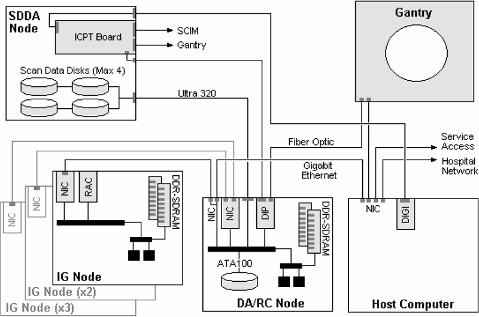
Illustration 5: GRE Hardware Level Data Flow Diagram
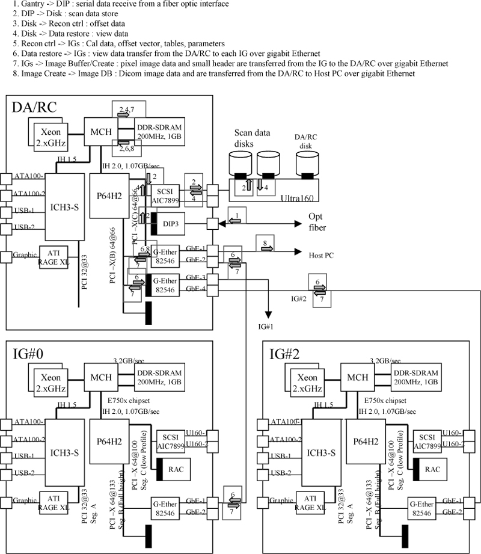
Illustration 6: GRE Power Distribution Diagram
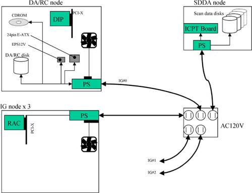
Illustration 7: GRE Interconnect Diagram
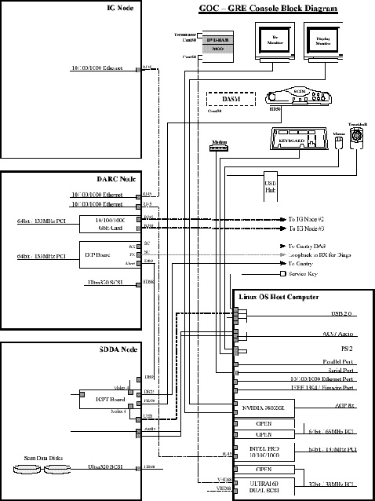
| NOTE: | For the scalable PDF version of the above GRE Interconnect diagram, click on the icon below: |
Media File 2: GRE Interconnect Diagram

The ICPT board has three function blocks, Intercom block, Prescribed Tilt / Reset block and NGPDU I/F block.
The Intercom block enables communication between the console operator and the patient on the table. The communication direction through the Intercom can be switched by depressing the TALK button on the SCIM keyboard. The operator can speak to the patient by depressing the TALK button (ON). When the TALK button is released (OFF) the operator can then listen to the patient.
When Auto-voice is playing, the operator can listen through the Console speaker on the Auto-voice R channel while the TALK button is released (OFF). At the same time the patient can listen through the Gantry speaker on the Auto-voice L channel.
If the operator depresses the TALK button (ON) while Auto-voice is playing, the Intercom will disable the Auto-voice sound and will switch the sound source to the Console microphone output. The Console microphone output is amplified and routed to the Host computer's audio input for the Auto-voice recording. The Auto voice recording will be managed by the host computer's software. It will be up to the software to start and stop recording the sound.
The Prescribed Tilt Interface board has two function blocks. One function block is for Prescribed_Tilt control; the other block is for the Gantry_Reset. The Prescribed_Tilt function in this board will detect the status of the push button (either press or release) in the SCIM keyboard by the use of two independent paths. An invert logic signal condition (XOR) in between these two paths would be detected and used to either tilt or not. The pulse-Width of both signals will be equal to the time the button is pressed. Once the signals are received the dual signal (redundant path) will be sent or transmitted to the ETC board so that a single point of failure can not cause tilt motion. The Gantry_Reset function will receive and detect a serial break command pulse coming from the serial port expander (RS-232) and then generate another pulse that will be sent to the STC board.
The NGPDU I/F block provides support for the PDU_24 and SYSLITE signals from the MSUB board in the Gantry.
The following figure shows the system block diagram of the ICPT Board:
Illustration 8: ICPT Board Block Diagram
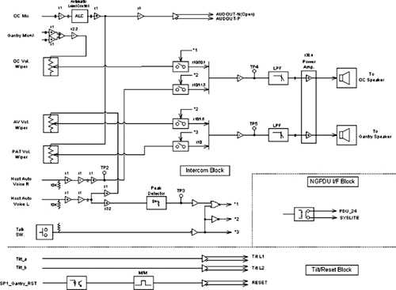
| NOTE: | For a larger, PDF version of the above diagram, click on the icon below: |
Media File 3: ICPT Board Block Diagram

Adjust the following pots for testing purposes:
R3 - Max (25 turns) fully CW, < 10 ohms between pot pins 1 and 3
R5 - Max (25 turns) fully CW, < 10 ohms between pot pins 1 and 3
R10 - Max (25 turns) fully CW, < 10 ohms between pot pins 1 and 3
R100 - 150K §Ù between pot pins 1 and 3
Illustration 9: Potentiometers
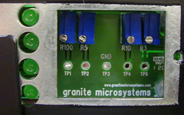
The following logic needs to be verified:
| Action Required | LED Indicators | LED Color | LED Status Spec |
| Low-input J19-32 | Tilt_1 (DS1) | Green | OFF |
| Low-input J19-34 | Tilt_2 (DS2) | Green | ON |
| High-input J54-2 | GR_IN (DS4) | Yellow | ON |
| High-input J54-2 | GR_OUT (DS3) | Yellow | Flash |
| NOTE: | Click on the PDF icon below, for a scalable PDF version of the module interconnections. |
Media File 4: Module Interconnections

Illustration 10: GRE Front Power Panel
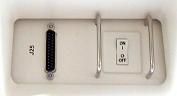
Illustration 11: GRE Console

Illustration 12: Rear Service Panel
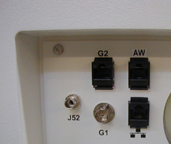
Illustration 13: Dual 73 GB image/36 GB System
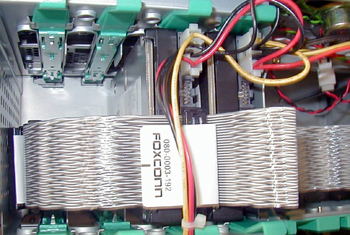
Illustration 14: Rear HP Connection
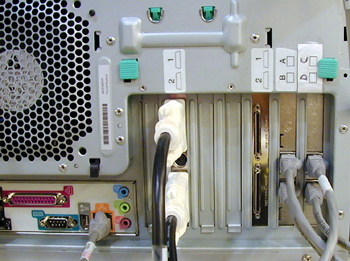